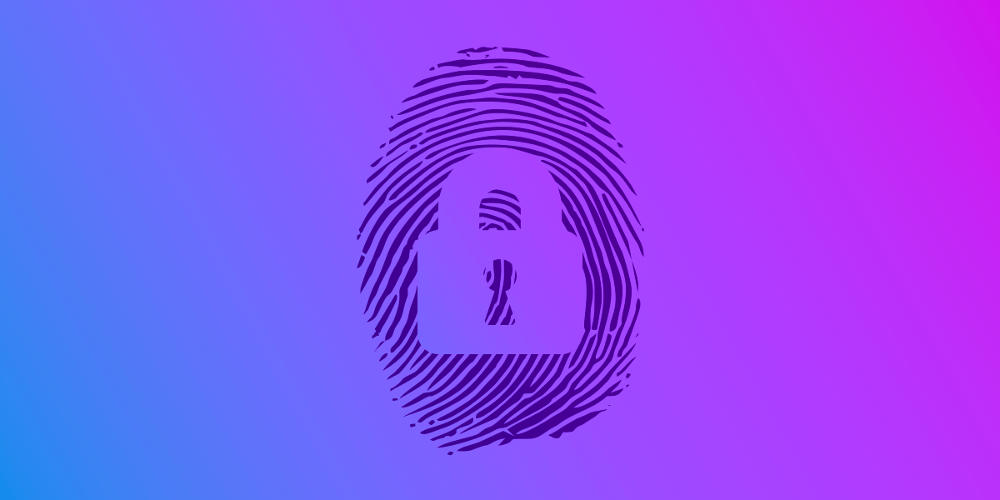

MODALITÀ DI RACCOLTA DATI
per tornare indietro clicca QUI
⠀
COOKIES
I cookie sono dei file di testo generati dalle pagine web che vengono utilizzati per memorizzare i dati dell’utente. Una delle funzionalità è quella di memorizzare il contenuto del carrello dei negozi online in modo da mostrare di nuovo i prodotti precedentemente selezionati. I cookie consentono inoltre la creazione di “profili utente”, fondamentali per la pubblicità personalizzata. Alcune delle informazioni che vengono salvate sono: il numero di identificazione, il dominio, le impostazioni dell'utente, il tempo trascorso sul sito, i dati inseriti.
⠀
DIGITAL FINGERPRINT

Il digital fingerprinting del dispositivo è l’impronta del dispositivo che serve per l’identificazione del dispositivo nel web. Può essere utilizzato per identificare gli utenti anche quando i cookie sono disattivati. Consente alle aziende di tracciare le nostre attività online per fini di marketing. Il fingerprinting rappresenta una seria minaccia alla privacy online, ma ha anche i suoi aspetti positivi: grazie ad esso infatti si possono identificare truffatori e altre attività sospette. Anche le banche usano questo metodo per identificare potenziali casi di frode.
⠀
LOCATION TRACKING
Con location tracking si intende il tracciamento della nostra posizione nel tempo. Google ad esempio utilizza i dati sulla posizione per tenere traccia delle visite degli utenti presso determinati luoghi. Questo è noto come “monitoraggio di terze parti“, è molto difficile da identificare ed è difficile evitarlo. Ogni smartphone è un localizzatore GPS che trasmette costantemente la sua posizione a varie aziende di cui si utilizzano i servizi.